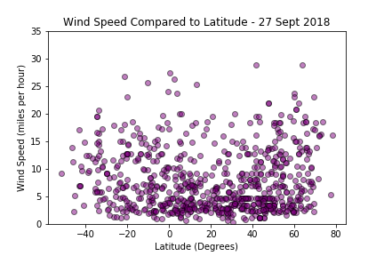

Latitude
This project visualized weather data in over 500 cities across the world of varying distance from the equator, utilizing
a simple Python library and the OpenWeatherMap API to build a representative model.
A series of scatter plots were created to showcase the following relationships:
- Temperature (F) vs. Latitude
- Humidity (%) vs. Latitude
- Cloudiness (%) vs. Latitude
- Wind Speed (mph) vs. Latitude


